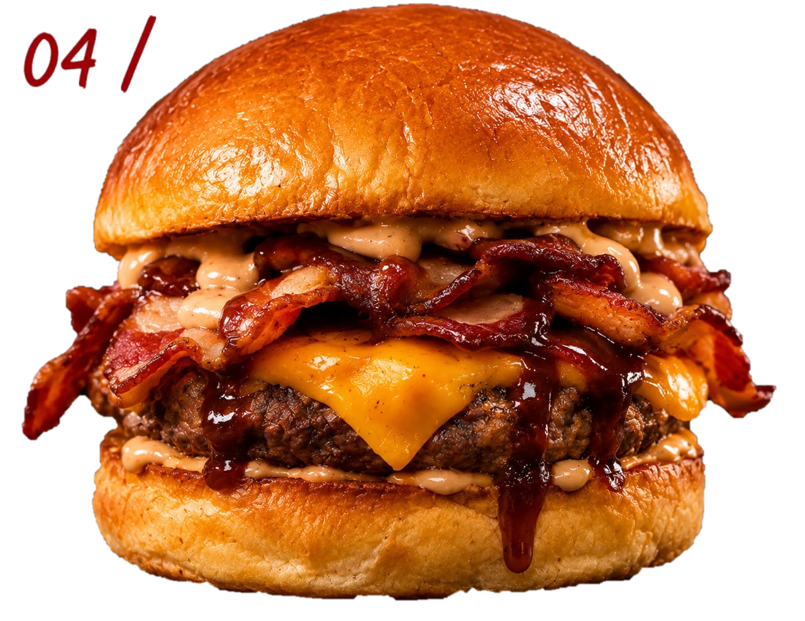
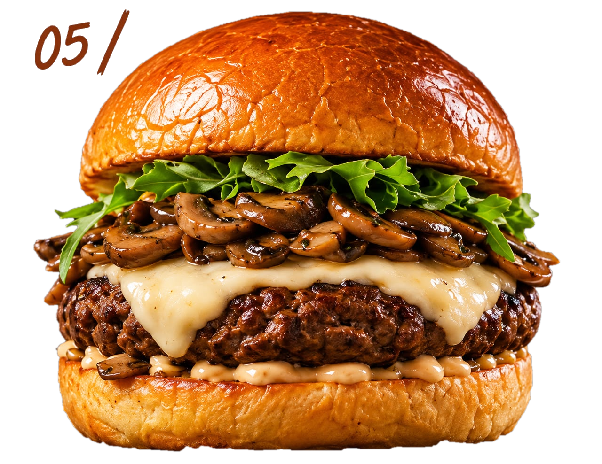

DESEJO DO DIA:
PEGA ESSA DICA E VAI DE YG BURGUER.
QUAL VAI SER
O SEU HOJE?

YG ESPECIAL
Hambúrguer artesanal, queijo, alface, tomate e molho especial.

DOUBLE YG
Dois hambúrgueres, queijo derretido e muito sabor.

SPICY YG
Hambúrguer artesanal com um toque especial de pimenta.

BBQ BACON
Hambúrguer, queijo, bacon crocante e molho barbecue.

FUNCHI YG
Hambúrguer artesanal, queijo e ingredientes especiais.
YG: A História por Trás do Sabor
Gabriel e Yasmin, amigos de infância, realizaram o sonho de empreender ao fundar a hamburgueria YG em 2026. Unindo os iniciais de seus nomes, Gabriel assumiu a chapa e a criação dos lanches, enquanto Yasmin cuidou dos molhos, do atendimento e da gestão.
O que começou como uma pequena operação delivery rapidamente cresceu graças aos hambúrgueres artesanais na brasa, permitindo que a dupla abrisse um espaço físico concorrido e acolhedor.